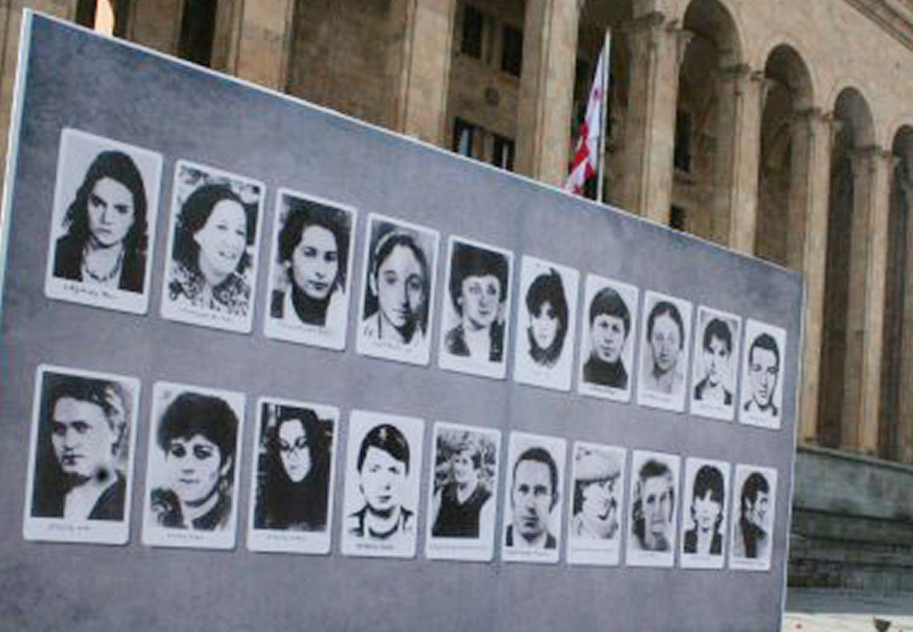

Part of Georgian-Abkhaz conflict, Revolutions of 1989, and Dissolution of the Soviet Union
The April 9 tragedy (also known as The massacre of Tbilisi or Tbilisi tragedy) refers to the events in Tbilisi, Georgian Soviet Socialist Republic, on April 9, 1989, when an anti-Soviet, pro-independence demonstration was crushed by the Soviet Army, resulting in 21 deaths and hundreds of injuries. April 9 is now remembered as the Day of National Unity (Georgian: ეროვნული ერთიანობის დღე, romanized: erovnuli ertianobis dghe), an annual public holiday.
n the Georgian SSR, the anti-Soviet movement grew more active in 1988. Political groups opposed to the Soviet Union organized a number of protests and gatherings in Tbilisi. The conflict between the Soviet government and Georgian nationalists deepened after the so-called Lykhny Assembly on March 18, 1989, when several thousand Abkhaz demanded secession from Georgia and restoration of the Union republic status of 1921–1931. In response, the anti-Soviet groups organized a series of unsanctioned meetings across the republic, claiming that the Soviet government was using Abkhaz separatism in order to oppose the pro-independence movement.